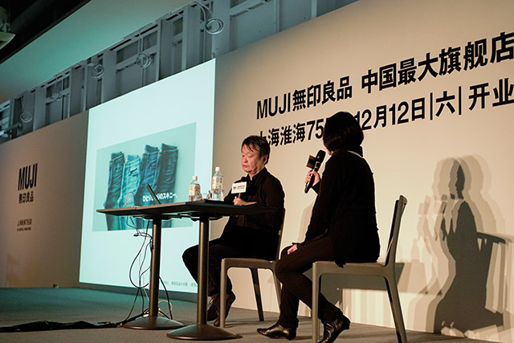
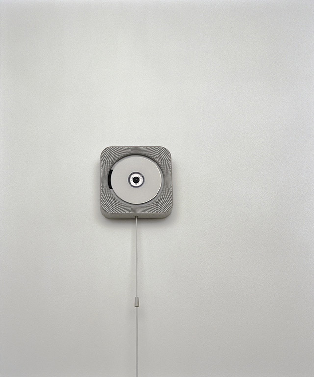

Naoto Fukasawa
I am involved in product development and design at MUJI. Today, I want to share with you the concept of “micro consideration,” which describes the level of detail with which all MUJI products take into consideration people’s lifestyles.
“MUJI is enough” is the key phrase we use to encapsulate this very concept. In essence this means, “MUJI is satisfying enough.” For example, you might be out shopping for something you have an image of in your mind, walking from store to store, but never finding the thing you are looking for. Finally, you go to MUJI, and there it is, the precise thing you had imagined. It is that moment when you think to yourself, “This is it. This will do.”I’m often asked exactly what kind of company MUJI is. Even the people who work at MUJI had never put together all the information necessary to really answer the question of what MUJI actually is. I’d like to show you now a video we put together to show that MUJI people and all of you feel that “MUJI is actually a pretty great company and a pretty great brand.” I think it’s obvious from this how much micro consideration is given to the fine details of every aspect of people’s everyday lives.
The first thing I designed for MUJI was this CD player. Everything in our lives is integrated. In other words, unified. It’s not just a thing. You pull the string and the music flows out as air flows. It’s the entire physical sensation. From the perspective of MUJI fulfilling the consideration aspect of this experience, I think this CD player expresses this thought in a straightforward way.
“Without Thought” is a phrase that I like to use. For example, trying to get an umbrella to stand up without an umbrella stand by using the grooves in a tile floor is something that people do. Therefore, MUJI doesn’t think of making an umbrella stand, but instead thinks that perhaps creating a simple groove might be a good place to start. This is the kind of living MUJI tries to imagine. MUJI starts by thinking of things that we do naturally and without thought, always thinking about what is most appropriate for day-to-day living.
Oftentimes, people regret buying too much or eating too much. Therefore, MUJI achieves the ultimate level of comfort in what is “Just Right.” Essentially, “Just Right” equates to the happiness people feel when something is “Just Right.” In the same way, since the opening of this flagship store, I think the happiness you seem to experience when you visit tells us that this must be “Just Right.” I encourage you to look for the things in your life that are “Just Right.”This is how MUJI thinks of all of its products, such as the mattress with legs, rather than a bed, or a shelf with a minimum amount of structure, and polypropylene boxes that make organization easy. MUJI is continuously counter balancing its position against society in order to give harmonies to people’s lives.
I think the making of a product is about drawing a line within a space. It is the line in the center that remains balanced no matter how much pressure is applied from either side.
All of us at MUJI are united in drawing this one harmonious line. Of course, finding the size that is “Just Right,” and for example, a thickness for table legs and tabletops that is “Just Right,” is what we are constantly considering.
In terms of processing and materials, MUJI chooses the easiest processing methods and the materials that are “Just Right.”This is a business card case. Using the simplest methods possible to make products — this is the MUJI principle. As a result, MUJI offers a very compact lifestyle without things being too big.Let’s take a look at the complete modules and the lifestyle that comes from our ideas about this kind of compact living, or what we call “Compact Life.”
In the project, we have standardized basic dimensions of storage products, which were initially varied, based on our module design concept. In addition, thinking about the “Compact Life” concept in terms of travel, we have made things even more succinct and compact, and created MUJI to GO. In the project, you can see the very minute level of detail with so much micro consideration.